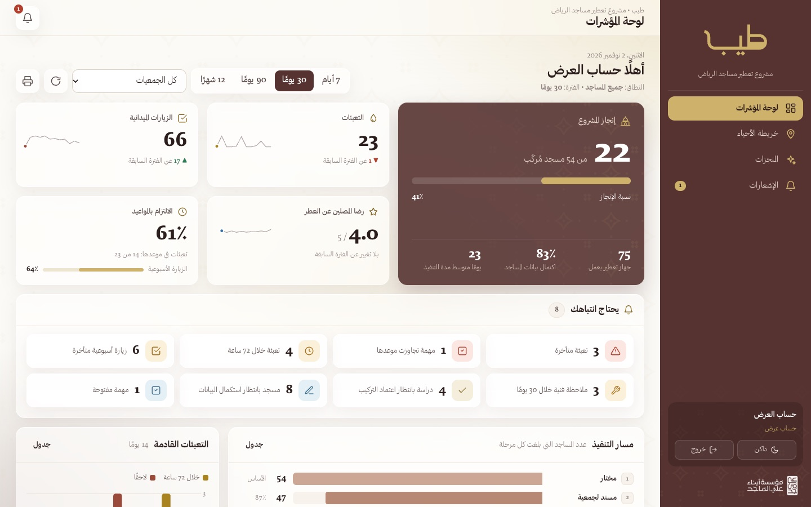
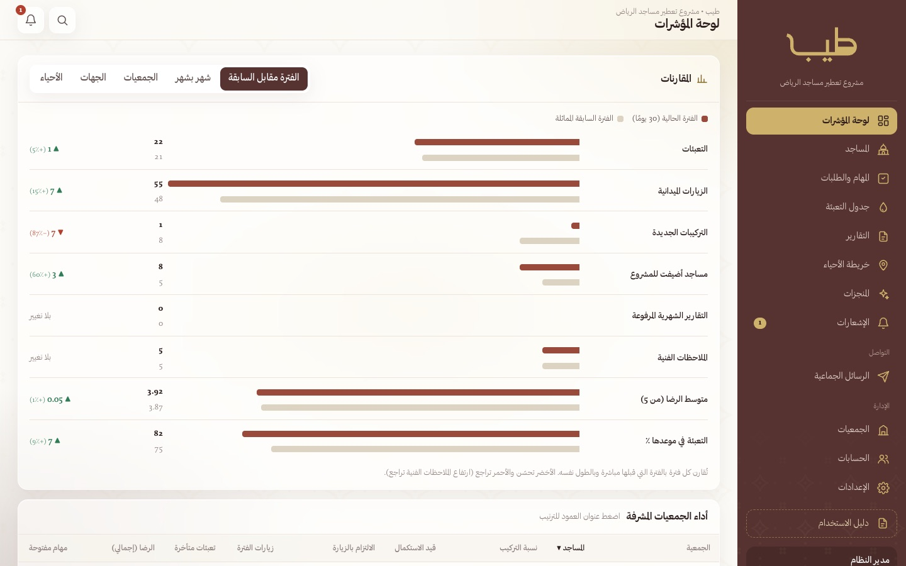
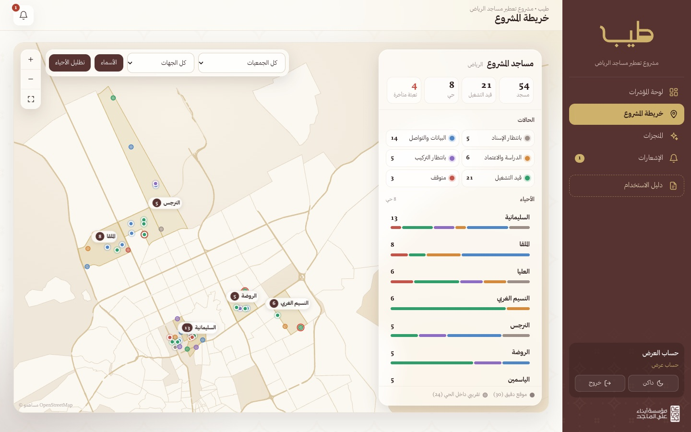
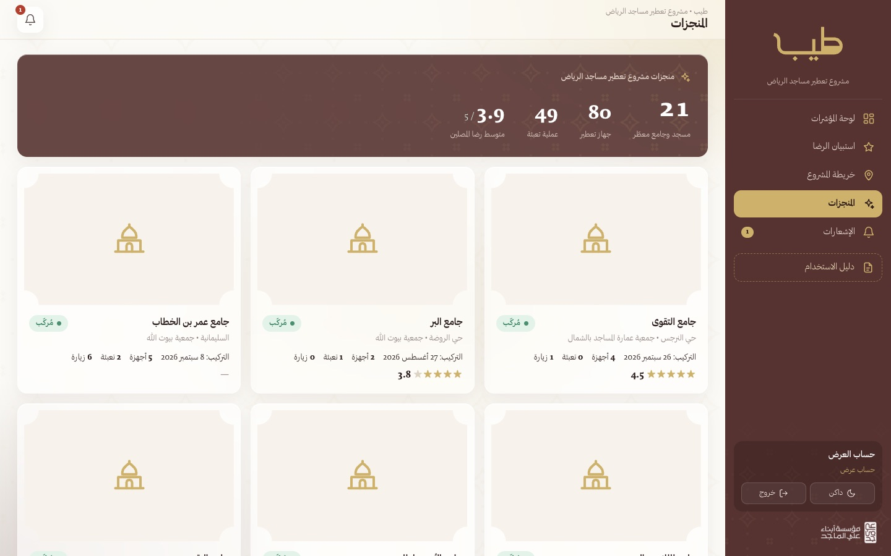

1صلاحياتك
حساب العرض مخصص للجهات والمسؤولين الذين يتابعون المشروع. يرى: لوحة المؤشرات بكل مقارناتها، وخريطة المشروع، والمنجزات، والإشعارات. ولا يرى أرقام جوالات فرق المساجد، ولا يعدّل أي بيانات.
2الدخول وتفعيل الحساب
يُنشئ مدير النظام حسابك ويرسل لك رمز تفعيل مع رابط المنصة عبر واتساب أو البريد. تفعّل الحساب مرة واحدة، ثم تدخل بعدها بالبريد وكلمة المرور.
- افتح رابط المنصة: https://alqahtani0908-creator.github.io/tayyib/
- اختر تبويب «تفعيل حساب جديد».
- اكتب بريدك الإلكتروني كما سجّله المدير، ورمز التفعيل المكوّن من ٨ خانات.
- اختر كلمة مرور من ٨ أحرف على الأقل، ثم اضغط «تفعيل الحساب» — تدخل المنصة مباشرة.


3لوحة المؤشرات
اختر الفترة من الأعلى (٧ أيام إلى ١٢ شهرًا) أو جمعية معينة. تعرض اللوحة إنجاز المشروع، والتعبئات والزيارات، ورضا المصلين، والالتزام بالمواعيد، ومسار التنفيذ، والتوزيع على الأحياء، وأداء الجمعيات.

في قسم المقارنات: الفترة الحالية مقابل السابقة، وشهر بشهر، وترتيب الجمعيات والجهات والأحياء بأي مقياس مع الفرق عن المتوسط، ومقارنة مباشرة بين جمعيتين.

4خريطة المشروع
كل مسجد نقطة ملوّنة حسب حالته (من الإسناد حتى التشغيل)، والنبض الأحمر يعني تعبئة متأخرة. اضغط أي حالة في اللوحة لإخفائها أو إظهارها، وأي نقطة أو حي لعرض تفاصيله. اسحب للتحريك واستخدم العجلة أو إصبعين للتكبير.

5المنجزات
معرض المساجد المركّبة بصورها مع أرقام المشروع: عدد المساجد المعطّرة، وأجهزة التعطير، وعمليات التعبئة، ومتوسط رضا المصلين.

6الإشعارات
تصلك الإشعارات لحظيًا مع تنبيه صوتي خفيف عند كل ما يخصك: إسناد مسجد، تقرير جديد، اعتماد، مهمة، أو تذكير بموعد. اضغط الجرس لعرض آخر الإشعارات، واضغط أي إشعار للانتقال لصفحته مباشرة.